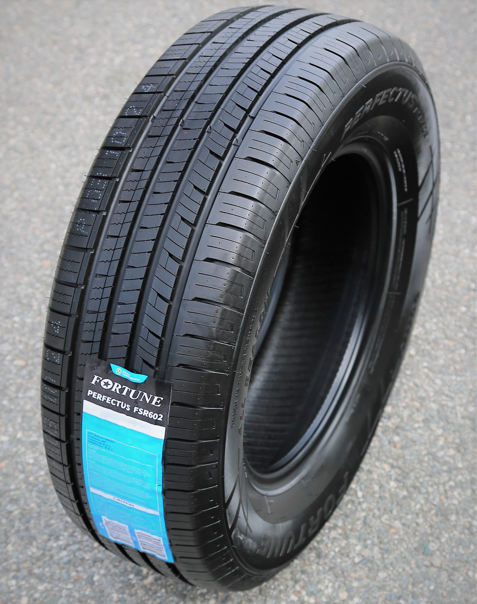

Fortune Perfectus FSR602 225/65R17

RM 285.00
Fortune Perfectus FSR602 – 225/65R17 102H Touring Tire The Fortune Perfectus FSR602 is an all-season / summer touring tire engineered for SUVs, crossovers, and passenger vehicles, offering a smooth, quiet ride with dependable wet and dry grip for everyday driving. Technical Specifications: • Brand: Fortune Tires (Manufactured in Thailand / Prinx Chengshan Group) • Model: Perfectus FSR602 • Size: 225/65R17 • Load Index: 102 (Max Load: 850 kg per tire) • Speed Rating: H (Up to 210 km/h) • Category: All-Season / Highway Touring • UTQG Rating: 600 A A (High treadwear durability) • Sidewall: Black Sidewall (BSW) | Standard Load (SL), Non-Runflat Key Features & Benefits: • Asymmetrical Tread Design: Enhances high-speed stability, steering responsiveness, and cornering grip. • Superior Wet Traction: Four wide circumferential grooves rapidly evacuate water to reduce aquaplaning and improve wet braking safety. • Low Road Noise (PNS Technology): Built with Pattern Noise Simulation (PNS) technology to minimize cabin noise for a quieter, more comfortable drive. • Even Wear & Long Tread Life: Continuous center rib and closed rigid shoulders prevent irregular wear and extend mileage. Common Vehicle Fitments: Honda CR-V, Mazda CX-5, Toyota RAV4, Toyota Harrier, Nissan X-Trail, Subaru Forester, Proton X70, and other mid-size SUVs.
Klang Hock Li Tyre Services Sdn Bhd, Klang, Selangor, Malaysia.
View live product details and enquire